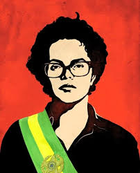

Dilma Vana Rousseff nasceu em 14 de dezembro de 1947, na cidade de Belo Horizonte (MG). É filha do imigrante búlgaro Pedro Rousseff e da professora Dilma Jane da Silva, nascida em Resende (RJ).
O casal teve três filhos: Igor, Dilma e Zana.
Aos 16 anos Dilma dá inicio á vida politica, integrando organizações de combate ao regime militar.
Em 1963 conhce o advogado Carlos Frankilin se casam sofrem perseguição da justiça Militar e ambos permanecem em reclusão por quase três anos;
em 1973 se muda para Porto Algre e retorna o curso de Economia pela Universidade federal do Rio Grande do Sul.
Em 1975 dá á luz a filha Paula Rousseff Araújo, Mas a luta pelos seus ideais continua mesmo sendo mãe, esposa, trabalhadora. Ela ajuda a criar o Partido Democrático Trabalhista (PDT).
Em 1989 foi o ano da primeira eleição presidencial direta após a ditadura militar e no segundo turno ela vai as ruas defender o então candidato Luiz Inicio Lula da Silva pelo Partido dos Trabalhadores.
Em 2009 Dilma era a então ministra da Casa Civil, ela recebe o diagnostico de cancêr linfático, realiza o tratamento de quimioterapia, sofre calada,
não se expõe para a sociedade como um ser fragilizado, não utiliza a doença para se promover, e continua a trabalhar como ministra.
Em 2010 Dilma aos 63 anos ganha a Eleição Presidencial contra o candidato José Serra, e se torna avó de Gabriel.
E esse foi um momento único e histórico, ter uma Mulher, divorciada, mãe solo, eleita pelo povo como a primiera Presidente da Republica do Brasil. No dia 01 de Janeiro de 2011 toma posse do seu mandato com a apoio da sua filha Paula.
durante quatro anos ela enfrenta homens de paleto e gravata muitos deles machistas e mostrando que era capaz de estar ali e governar um país inteiro.
Em 2014 Dilma Rousseff ganha novamente a eleição a presidente, contra o canditado Aécio Neves, mesmo o pais sofrendo crise economica a população basileira a elege para permanecer no cargo.
Após dois anos do segundo mandato ela e acusada pelo crime de responsabilidade fiscal (As famosas pedaladas fiscais). O Senado tenta lhe convencer a renunciar o cargo, mas esquecem da força que ela tem para lutar pelos seus ideais e principios.
O supremo Tribunal Federal julga a Dilma Rousseff e determina o impeachment, seu vice presidente assume o posto de presidente do Brasil.
“Não cabem meias palavras: O que está em curso é um golpe contra a democracia. Jamais renunciarei ”

Após o golpe, Dilma Rousseff provavelmente se abateu, se entristeceu e sofreu calada, passou um filme em sua cabeça sobre todas as diversidades e obstaculos que enfrentou ao longo de sua vida. Mas ela foi sábia em não demostrar para a sociedade seus sentimentos de triste e revolta.
Mas ela segue acreditando em seus ideias, não deixou a politica e hoje aos 76 anos é a presidente do Banco Brics (Brasil, Russia, Indía, China e África do Sul).
Segue lutando diariamente e mostrando que lugar de Mulher é a onde ela quiser.